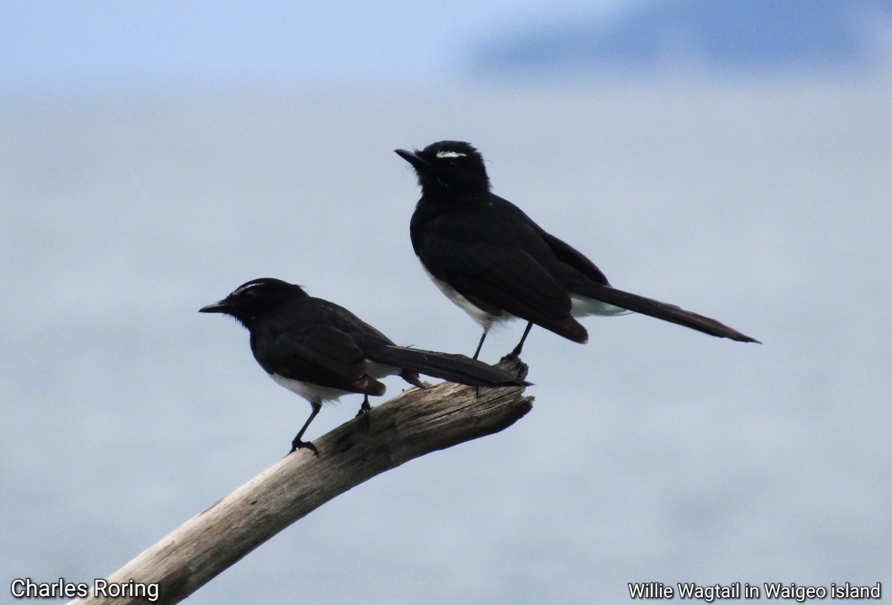
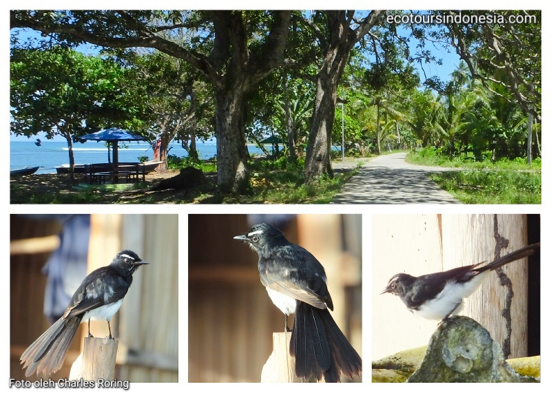

Burung Baikole adalah burung kipasan kebun atau Willie Wagtail yang banyak ditemukan di daerah pesisir pantai dan tepian sungai dan kawasan dataran rendah. Kicau Baikole merdu sekali terutama di pagi hari ketika mentari bersinar cerah atau saat hujan baru saja berhenti. Burung ini suka berkicau sepanjang hari. Warna bulunya dari kepala hingga ekor adalah hitam dengan bagian bawah dari dada, perut sampai buntut berwarna putih. Ada strip putih yang cukup panjang di alis.
Burung Baikole atau Willie Wagtail
Karena kicauannya yang merdu maka di daerah-daerah tertentu di Indonesia, burung ini ditangkap dari habitatnya lalu dipelihara dalam sangkar serta diperjualbelikan antar pulau terutama ke kolektor-kolektor burung kicau di kota-kota besar. Ketika sudah berada di dalam sangkar, burung mengalami stress sehingga frekuensi kicauannya berkurang. Nama Indonesianya adalah Burung Kipasan Kebun (Rhipidura leucophrys) sebarannya mencakup Maluku, Papua, Kepulauan Salomon,
Dalam bahasa Inggris burung ini disebut Willie Wagtail. Di daerah pesisir pantai, burung baikole suka bertengger di tiang rumah yang dibangun di atas air, di dermaga kayu atau pepohonan kecil. Sambil berkicau memanggil pasangan betina, ia akan menggoyang-goyangkan ekornya. Burung ini cukup umum ditemukan di kawasan pesisir seperti Pulau Roon, Rumberpon, Roswar, di Kabupaten Teluk Wondama; atau di Kepulauan Raja Ampat baik pulau besar maupun kecil seperti Waigeo, Gam, Batanta, Salawati hingga Kepulauan Sembilan, Kepulauan Kofiau dan Kepulauan Misool serta kepulauan Pasifik hingga Australia.
Baikole atau Kipasan Kebun dan Habitatnya
Hal yang sama juga bisa dilihat di pulau Kabupaten Tambrauw yakni Pulau Efwe dan Pulau Efnay, Pulau Numfor dan Kepulauan Biak Supiori. Burung Baikole atau Burung Pantat Goyang ini bisa dijumpai di sepanjang pantai, hingga taman-taman di daerah pemukiman penduduk terutama di kampung-kampung Kecil atau pantai-pantai yang sepi.
Wisatawan pengamat burung yang kebetulan berada di tepian pantai akan menikmati kicauan burung baikole ini hampir sepanjang hari.
Dalam dunia sains, burung baikole termasuk dalam keluarga burung ekor kipas atau fantails. Di Tanah Papua, ada 16 spesies yang dikenal. Burung Baikole atau Willie Wagtail adalah yang terbesar sebarannya. Ini ditulis oleh: Charles Roring
Teropong pengamatan burung yang saya rekomendasikan: